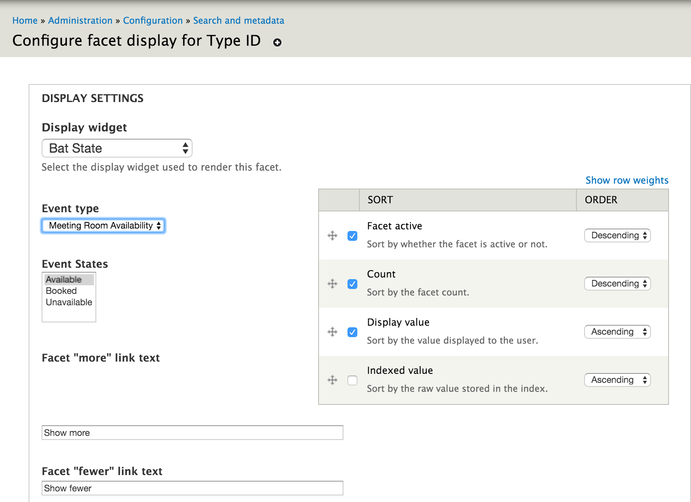
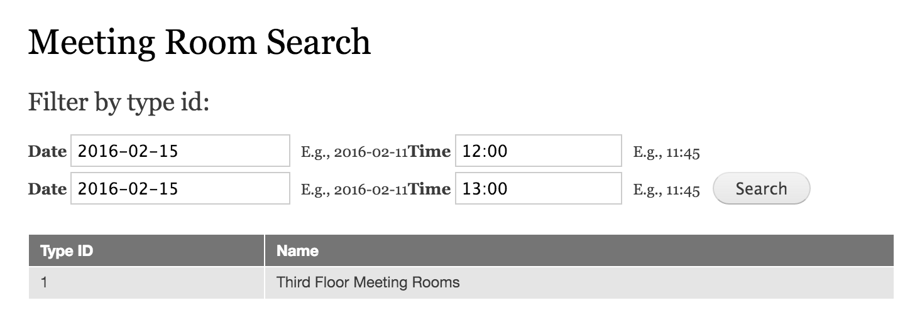

Searching for Availability¶
There are several way to search for availability, which ultimately, resolves in using the BAT PHP Library to determine in what state a unit is in over a given period of time.
BAT for Drupal supports out-of-the-box availability searches, integrated with the Search API and the Facet API. This enables you to build a view of search results where availability search is another search facet.
Requirements¶
- Make sure the BAT Facets module is enabled.
- We are going to be using a Search View so the “Search Views” module (bundled with the Search API) needs to be enabled as well.
- Finally, for the example, we are going to be using the MySQL Drupal database as a back-end so we will need the Search API Database Search module.
Create an index of types¶
The BAT Facets module does a search on types of units and presents a type as available over a given date range if there is at least one unit of that type available.
Create a server for meeting rooms:
Create an index of meeting rooms:
Add a Facet on Type ID¶
Add a facet of the type Type ID
Configure the facet to use the BAT State widget, selecting the event states to return on search. By choosing the Available state, you will get back types that are available (the typical use case), but you can just as easily search for other states.
Create a view to do search¶
Now we will create a view and add the facet block to that view. (This is not meant to be a tutorial on creating Views or using the Search API - there is a lot of documentation on that on the Search API module page)
With the view in place you are able to do a search:
The state of our meeting rooms is actually:
So we do get a result for 1200-1300 because there is one meeting room available. If we set that to unavailable:
Our search will not produce any results
As this is all based on easily configurable behavior through the UI or code, you can adjust to get the theme/behavior that your application requires.